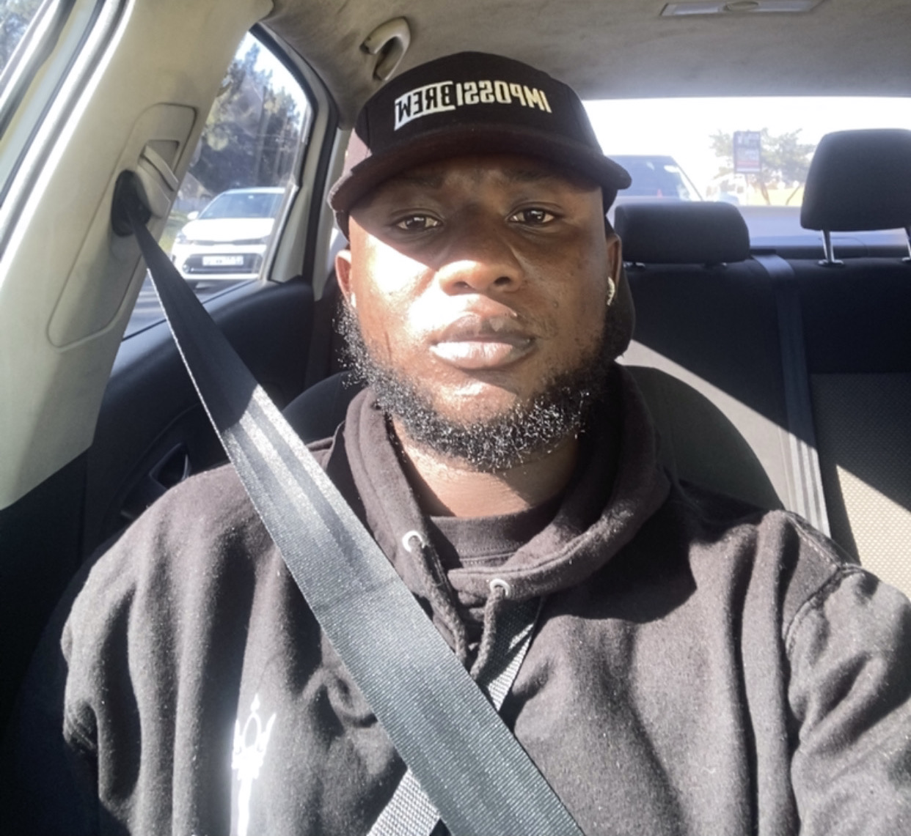

Cybersecurity-focused
Focused on protecting information, systems, and digital assets from external threats through cybersecurity practices, security monitoring, and threat analysis.

I am Ireneous Kelvin Baidoe, a cybersecurity-focused IT professional passionate about protecting digital systems, analyzing threats, and using technology to solve real-world challenges. My experience spans cybersecurity, IT support, web technologies, data analysis, and digital solutions. I have worked on technology projects involving system development, process improvement, and operational support, building a strong understanding of how organizations use and secure their digital environments. I focus on security operations, threat detection, incident response, and defensive security practices, combining technical knowledge with analytical skills to identify risks and support secure technology solutions. .
Beyond cybersecurity, I value leadership, collaboration, and continuous growth. I have developed these qualities through involvement in youth leadership initiatives, mentoring, and community-focused activities. I am committed to continuous learning in cybersecurity and actively work to strengthen my knowledge in areas such as security operations, threat detection, and digital defense. I believe strong cybersecurity requires both technical expertise and the ability to work with people, share knowledge, and contribute positively to the wider community.